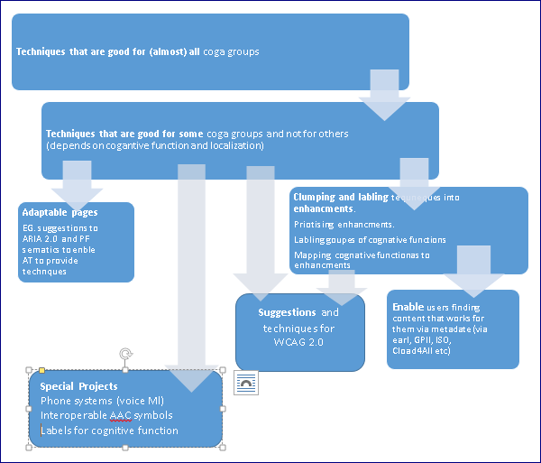

This document provides background research about user groups with cognitive disabilities and the challenges that they face when using Web technologies. We aim to identify and describe the current situation so that, at a later stage, we will be able to contrast it to what we want to happen. This later work will include identifying gaps and potentials strategies for improving accessibility, suggesting authoring techniques and creating a road-map for improving accessibility for people with learning disabilities and cognitive disabilities.
This document is not a specification (non-normative)
@@
@@
This document provides background research on user groups with learning disabilities and cognitive disabilities and the challenges they face when using the Web Technologies. We aim to identify and describe the current situation so that subsequent publications can contrast it to what we want to happen.
This document will be used as a base document to enable the task force to perform a gap analysis, suggest techniques and create a road-map for improving accessibility for people with learning disabilities and cognitive disabilities.
It is currently at is first draft and we are asking for comments. Please let us know if you are aware of omissions.
This document is important because enabling people with learning and cognitive disabilities to use the Web and ICT is of critical importance to both the individuals and to society.
More and more the Internet and ICT has become the main way people stay informed and current on news and health information, keep in touch with friends and family, and provides independence, convenient shopping, and other. People who cannot use these interfaces will have an increased feeling of being disabled and alienation from society.
Further, with the advent of the Web of Things everyday physical objects are connected to the Internet and have ICT interfaces. Being able to use these interfaces now is an essential component of allowing people to maintain their independence, stay in the work force for longer and stay safe.
Consider that the population is aging. By 2050 it is projected there will be 115 million people with dementia worldwide. It is essential to the economy and society that people with mild and moderate levels of dementia stay as active as possible and participate in society for as long as possible. However, at the moment even people with only a mild cognitive decline find may standard applications impossible to use. That means more and more people are dependent on care givers for things that they could do themselves, increasing the crippling cost of care and reducing human dignity.
We therefore invite you to review this draft, comment and consider how your technologies and work may be effected by these issues.
There is a huge number of cognitive disabilities and variations of them. If we attempt an analysis of all the possibilities, the job will be too big and nothing will be achieved. Therefore we are adopting a phased approach, selecting in phase one a limited scope of eight diverse disabilities, and hope to achieve something useful within that scope. Also note that helping users improve skills, and emotional disabilities, are out of scope for phase one. We anticipate this analysis will continue to a second or third phase where more user groups are analyzed and the existing analyses are updated with new research and with new technologies and scenarios.
This is an early and incomplete draft for review and to help us get comments and early feedback. We are particularly interested in:
We welcome comments and suggestions. Please send comments to … All comments will be reviewed and discussed by the task force. Although we cannot commit to formally responding to all comments on this draft, the discussions can be tracked in the task force minutes.
Different people with cognitive disabilities may have problems in the following areas:
For more information please see section 5.
It is important to note that people may have limitations in one area and not in other areas. For example, a dyslexic may have above average reasoning but impaired visual memory and literacy skills. Someone with Down Syndrome may have an above average visual memory but impaired judgment.
| Cognitive Function Category | Cognitive Function sub categories and Tags |
Dyslexia |
Non-vocal |
Down Syndrome |
Autism |
Dyscalculia |
Aging Related Cognitive Decline |
Attention deficit Disorder (ADD/ ADHD) |
|---|---|---|---|---|---|---|---|---|
| Memory |
Context Based
Awareness based
Also memories can be stored and recalled as
|
May have impaired:
|
Receptive and Expressive Aphasia may result in impaired:
Dysphonia or Elective Mutism – may have no duration based memory difficulties unless co-occurring disabilities exist Cerebral Palsy - range from no memory difficulties to auditory and visual memory difficulties linked to dyslexia and other c-occurring difficulties. |
Impaired auditory (verbal) short-term memory, and explicit long-term memory. However, visuospatial short-term memory, associative learning, and implicit long-term memory functions are preserved. short-term auditory memory which can affect writing to long term auditory memory visual memory, is often far stronger Difficulty remembering information |
There may be problems with memory, and |
Memory may be affected Mainly Visuo-Spatial, and Procedural Memory for layout, schedules or sequences and Prospective Memory for things like financial planning |
Affected in dementia |
Working memory may be affected. |
Executive Functions
|
Sometimes affected: |
Those with Aphasia may have executive functional difficulties especially if emotional lability is an issue. Cognitive impairment can affect cause and effect and therefore planning and organization as well as execution. |
Problems with executive function including: |
Sometimes affected: Shift can be strongly effected |
Sometimes affected when involving numbers or time such as: Getting the right bus/train at the right time and on the correct platform. |
All Executive Functions are affected in dementia . Sometimes Executive Function is affected in age related cognitive decline, such as Shift and judgment (lesser often) |
Executive function may be affected. |
|
| Reasoning |
|
Typically not affected |
Where intellectual capacity is affected there may be issues with reasoning, learning and thus remembering plus abstraction. |
Typically affected. |
Typically affected: Mathematical intelligence is also often affected |
Typically affected: |
Often affected in dementia including Behavioral. |
Typically not affected other then |
| Attention |
|
Selective Attention may be affected |
Attention deficit disorder may be a co-occurring difficulty for some non-vocal individuals. Shortened attention span can occur with Aphasia. |
Difficulties with sustained attention. |
Typically affected. |
|
Affected in dementia |
Affected |
| Language |
see below for more details |
|
|
|
Typically affected. |
|
|
|
| Speech Perception | Speech Perception depends on:
Note, there is also related memory such as working memory, auditory memory -see above
|
Often affected: Morphosyntax |
Non-vocal individuals may have auditory perceptual impairments, poor listening skills and dysnomia (lack naming skills) and semantic pragmatic disorder. |
Problems with morphosyntax. weaker overall delayed language and speech development |
|
|
Affected in dementia and to a much lesser degree by age related cognitive decline (Temporal tracking) |
|
| Understanding Figural Language | Understanding figural language, such as: a simile, onomatopoeia, personification , oxymoron, paradox, allusion or idiom and puns. This is the ability to understand figural language and does not include the knowledge of the metaphors. |
Not affected |
Receptive / Expressive Aphasia may cause a failure to understand figurative speech. |
|
|
|
Sometimes affected by dementia |
|
| Literacy |
|
Affected |
Those with poor phonemic awareness skills - often AAC users, Aphasia and poor language skills may be affected. |
Problems with Speech perceptions as above, |
Typically affected. |
|
Phoneme Processing and Cross-Modal Association are affected in dementia |
|
| Visual Perception (visual recognition ) |
|
All can be affected. May also have visual stress. |
Those with developmental or acquired dyslexia who are also non-vocal may be affected – can be due to Aphasia. |
Strong visual memory but possible visual processing difficulties |
Visual comprehension is often affected. |
Face Recognition and Object Recognition and Visual Pattern Recognition |
Can be affected in dementia |
Diminished visual processing speeds |
| Other Perception | Auditory Perception affected Psychomotor may be affected |
Depending on the co-occurring difficulties those with Aphasia, cerebral palsy, MND. MS and other disabilities that cause speech and language impairment may also have other perceptual difficulties. |
Psychomotor Perception seems affected. Difficulty with finding the way to places or navigating |
Have unusual reactions to Sensory, Olfactory , smell, tactile and auditory Perception |
Psychomotor Perception |
Affected in dementia and to a lesser degree by age related cognitive decline (such as Psychomotor Perception -Spatial/Temporal Understanding) |
Developmental coordination disorder / motor clumsiness. |
|
| Knowledge |
|
Typically not affected. |
Intellectual cognitive impairment causes individuals to struggle with this aspect. |
Affected |
Affected. Partially Knowledge of Behaviors |
Mathematical Knowledge |
Affected in acquisition of new knowledge. Affected strongly in dementia |
|
| Behavioral |
|
Slightly affected: Norms and Social Cues |
Aphasia may lead to inappropriate emotional lability where certain types of brain damage have also occurred. |
Affected |
Strongly affected (primary symptom) |
Not affected |
Affected in dementia |
|
| Consciousness | Delusions, Hallucinations |
Typically not affected. |
|
|
|
Not affected |
Affected in dementia including such as delusions, and to a lesser degree by age related cognitive decline such as irritation and withdrawal . |
|
Notes on the Cognitive Function Table:
This section describes the state of the art in classification of cognitive function.
User group research modules follow. This is Phase 1. The group hopes to add more groups such as effects of Post-Traumatic Stress Disorder (PTSD) on cognitive function.
Note: We have taken terms and concepts from across the work we are doing on disability and cognitive function. Where more then one term exists for what seems to be a very similar function we have chosen one term but brought the others for reference. We have also reviewed the Caroll taxonomy but it was focused on educational assessment, and sychometric-based models for human intelligence and was therefore not fully relevant (for example: knowledge categories). When quoting a Caroll category we have tried to put the mnemonic after the term such as (RG) or (I).
Here are the cognitive functions that we have identified so far. It is not complete and it is not yet in a taxonomy form.
Executive functions (also known as cognitive control and supervisory attentional system) is an umbrella term for the management of cognitive processes such as reasoning and problem solving (goal focused reasoning) as described bellow. Executive function also includes:
In making a decision or conclusion we may use:
Fluid reasoning is the capacity to think logically and solve problems in novel situations, independent of acquired knowledge [Fluid_and_crystallized_intelligence] Fluid intelligence may involves both the dorsolateral prefrontal cortex, the anterior cingulate cortex.
Types of fluid reasoning are:
A related idea is Speed of Reasoning (RE): Speed or fluency in performing reasoning tasks [http://www-personal.umich.edu/~itm/688/wk6/CHC%20Definitions.pdf]
Crystallized intelligence (sometimes called Comprehension- Knowledge) is the ability to use skills, knowledge, and experience. It does not equate to memory, but it does rely on accessing information from long-term memory. Crystallized intelligence is one’s lifetime of intellectual achievement, as demonstrated largely through one's vocabulary and general knowledge. [http://en.wikipedia.org/wiki/Fluid_and_crystallized_intelligence</cite> Crystallized intelligence involves the storage and usage of long-term memories, such as by the hippocampus.
We have included the dependent aspects in the sections on memory and language [ http://www-personal.umich.edu/~itm/688/wk6/CHC%20Definitions.pdf]
Reasoning and executive functions require attention. Types of attention are:
People talk about types of memories are often talking about different categories of types of memory. Any memory based events can be described in all these categories. For example: An event may cause an sensory experience to go into long term memory implicitly,. Here are the types I have identified:
Types – durations based: working , long term, short term, and possibly Intermediary
Types – context based: emotional, procedural, sensory (tactile, smell, Psychomotor Kinestheti, Olfactory) auditory, visual, visuo-spatial, spatial, musical and prospective memory.
Types - awareness level: implicit and explicit
Also memories can be stored and recalled as Associative memory (MA), Meaningful memory (MM), Free-recall memory (M6),
Speak, write, read or understand speech and/or language.
Sign language without spoken language probably requires a slightly different set of skills such as:
Beyond basic language, literacy typically requires:
Note that many dyslexics achieve literacy without many of these functions or with impaired functioning.
The visual system automatically groups elements into patterns: Proximity, Similarity, Closure, Symmetry, Common Fate (i.e. common motion), and Continuity (Gestalt psychology).
Functions include:Auditory perception (see Speech perception above for further classifications), Motor, Tactile smell Psychomotor Kinestheti( bodily position, weight, or movement) Olfactory and sensory perception
Processing speed effect all the functions above. See Caroll.
A related concept is fluency
Note that these are in our mandate – for example: Dementia with Lewy bodies affects the cerebrum where small round lumps of proteins build up and can cause fluctuations of consciousness as well as hallucinations, delusions (firmly held beliefs in things that are not real) and false ideas (such as paranoia).
Occipital Lobe
Parietal Lobe
Temporal Lobe
Limbic System
The limbic system contains glands which help relay emotions.
Corpus Callosum
Cerebellum
Brain Stem
Pituitary Gland
1 . Educational taxonomies such as Carol for Cyristalised resing includes Language Development (LD):
Lexical Knowledge (VL): Listening Ability (LS):General (verbal) Information (K0): Range of general stored knowledge (primarily verbal). Information about Culture (K2) Range of stored general cultural knowledge (e.g., music, art) Communication Ability (CM Oral Production and Fluency (OP)
Grammatical Sensitivity (MY): morphology) and sentences (syntax), Foreign Language Proficiency (KL), Foreign Language Aptitude (LA)
3. Effected in: Alzheimer’s disease, Aphasias, Advanced age, dyslexia, emotional disabilities such as Schizophrenia and PTSD
4. Expressive aphasia left inferior frontal cortex. These patients are described with having severe syntactical deficits, which means that they have extreme difficulty in forming sentences correctly. ((Hessler, Dorte; Jonkers, Bastiaanse (December 2010). "The influence of phonetic dimensions on aphasic speech perception". Clinical Linguistics and Phonetics. 12 24: 980–996.
Receptive aphasia - left temproparietal lobe. Receptive Aphasic patients mostly suffer from lexical-semantic difficulties, but also have difficulties in comprehension tasks. The effect of receptive aphasia on understanding is much more severe.
Hessler, Dorte; Jonkers, Bastiaanse (December 2010). "The influence of phonetic dimensions on aphasic speech perception". Clinical Linguistics and Phonetics. 12 24: 980–996.
Anarthria: Loss of the motor ability that enables speech. Complete loss of the ability to vocalize words as a result of an injury to the part of the brain that is responsible for controlling the larynx
5. (Aphonia: The inability to produce voice.
Alalia: A delay in the development or use of the mechanisms that produce speech.
Dyslalia: Difficulties in talking due to structural defects in speech organs.
Developmental verbal dyspraxia: Motor speech disorder involving impairments in the motor control of speech production.)
6. Carol tend to have abitlites as the main category with memory and sensitivity of such as Tactile sensitivity
(other then Psychomotor abilities which has sub categories of Static strength (P3), Multi-limb coordination (P6), Finger dexterity (P2), Manual dexterity (P1), Arm-hand steadiness (P7),Control precision (P8), Aiming (A1), Gross body equilibrium (P4)
7. Carol brings Processing speed (Gs) such as Cognitive processing speed (Gs) Broad cognitive speediness (Gs) Perceptual speed (P), Rate-of-test-taking (R9), Number facility (N), Speed of reasoning (RE), Reading speed (RS),Writing speed (WS) Reaction and decision Speed (Gt) Correct decision speed (CDS) Processing speed (RT decision speed) Such as Simple reaction time (R1), Choice reaction time (R2), Semantic processing speed (R4), Mental comparison speed (R7), Inspection time (IT)
In making user scenarios and user group research we took a multilevel approach including:
In the user group research section of the gap analysis, we aim to identify abstract principles for accessibility for people with cognitive and learning disabilities, and core challenges for each user group as well as practical techniques.
However, when trying to identify abstract principles, it is often helpful to look at concrete user scenarios and challenges that different user group’s face. For that purpose we have identified the practical and diverse user scenarios that should be considered in user group research. These include:
Making sure users can communicate with people and be part of society. Tasks to investigate:
Using content should be:
The aim of the Cognitive and Learning Disabilities Accessibility Task Force (COGA) is to improve Web accessibility for people with cognitive and learning disabilities.
This is a background research document. However it may be worth concluding with an overview of what could be done for accessibility for people with cognitive and learning disabilities. It is intended to help us (COGA) identify what needs to be done to get there.
Note that some of the ideas bellow may be out of scope for our mandate and role as a W3C task force.

There is a substantial amount of techniques that are helpful for over 90% of people with cognitive disabilities. These techniques need to be gathered in one place.
For example, most people with any cognitive disability may be disturbed when form data is lost when a session times out. Almost all COGA use groups may need help or need to double check data entered into a form. Timing out so that they need to start again may make a form unusable.
See sample page format to help us gather techniques as we come across them, so that they do not get forgotten or are hard to find later when we are finished the gap analysis.
We also need to document t techniques that are good for some COGA user groups and not for others (depends on cognitive function and localization). For example, text under symbols may be useful for many people with dementia but unhelpful for many people with severe language disabilities.
In a localization example using left hand side text alignment is helpful for English sites but right hand side text alignment is helpful for sites in Arabic or Hebrew.
Once we have a comprehensive set of techniques we may want to grope techniques into “enhancements”. For example, we may make a group of techniques as “simple text” enhancements, making it easier to reference.
We may also want to identify how different enhancements benefit people with different limitations of cognitive functions.
To achieve this we may need to label groups of cognitive functions, so that we can simplify linking enhancements to cognitive functions. See an initial page of cognitive function.
Once we have a set of enhancements we can enable standards such as EARL to identify which documents support which enhancements.. Other supported systems include GPII, ISO, Cload4All and possibly Fluid.
Once we have a comprehensive set of techniques we can also explore what is needed to make a website adaptable to different COGA groups of users. We may be able to identify semantics that enable adaptation for specific learning and cognitive disabilities and to conflicting needs of different users.
This could include:
(See more information)
This may result in suggestions to PF group for the ARIA 2.0 specification
There may be other accommodations that are needed that our outside the handshaking approach or adaptable pages
Also see more ideas.